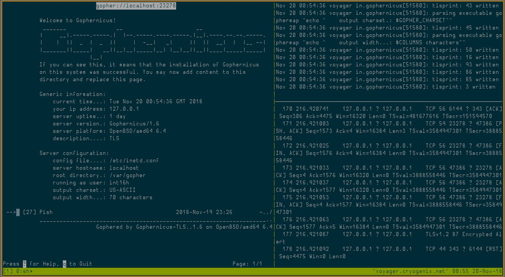
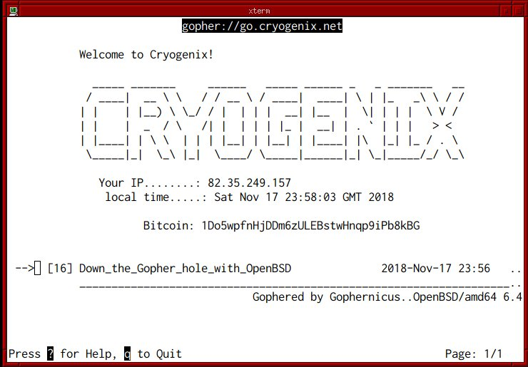
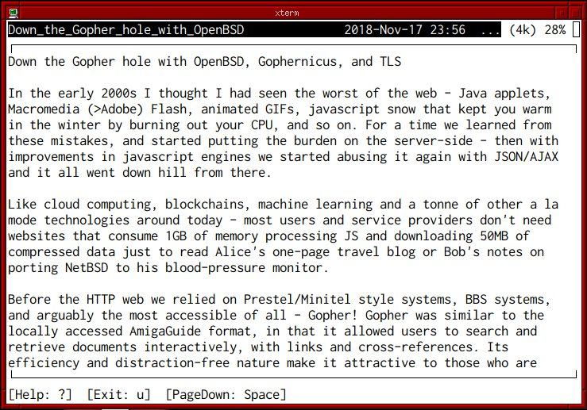
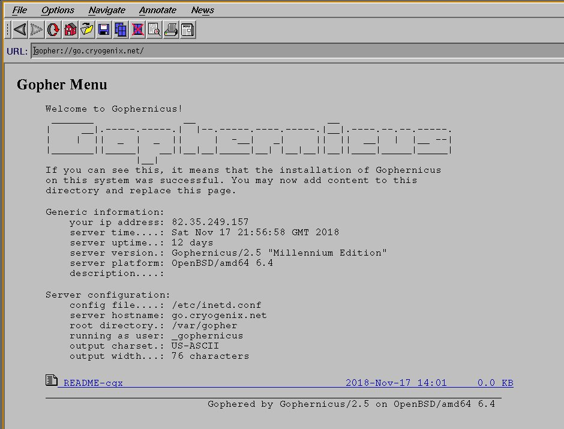

Navigation: ${HOME} /rss.xml /github /Gab
UPDATE: I've added TLS support to Gophernicus so you don't need to use stunnel anymore. The code is ugly and unpolished though so I wouldn't recommend for production use.

In the early 2000s I thought I had seen the worst of the web - Java applets, Macromedia (>Adobe) Flash, animated GIFs, javascript snow that kept you warm in the winter by burning out your CPU, and so on. For a time we learned from these mistakes, and started putting the burden on the server-side - then with improvements in javascript engines we started abusing it again with JSON/AJAX and it all went down hill from there.
Like cloud computing, blockchains, machine learning and a tonne of other a la mode technologies around today - most users and service providers don't need websites that consume 1GB of memory processing JS and downloading 50MB of compressed data just to read Alice's one-page travel blog or Bob's notes on porting NetBSD to his blood-pressure monitor.
Before the HTTP web we relied on Prestel/Minitel style systems, BBS systems, and arguably the most accessible of all - Gopher! Gopher was similar to the locally accessed AmigaGuide format, in that it allowed users to search and retrieve documents interactively, with links and cross-references. Its efficiency and distraction-free nature make it attractive to those who are tired of the invasive, clickbait, ad-filled, javascript-laden web2/3.x. But enough complaining and evangelism - here's how to get your own Gopher Hole!
Gophernicus is a modern gopher daemon which aims to be secure (although it still uses inetd -_-); it's even in OpenBSD ports so at least we can rely on it to be reasonably audited. Let's install that and also an ncurses-based gopher client (or lynx(1)) to test things out later:
$ doas pkg_add gophernicus gopher
If you plan on offering Gopher over TLS:
$ doas pkg_add stunnel
Instruct inetd(8) how to handle gopher connections (defaults to port 70 TCP) by adding this to /etc/inetd.conf
gopher stream tcp nowait _gophernicus /usr/local/libexec/in.gophernicus in.gophernicus -h go.cryogenix.net
See /usr/local/share/doc/gophernicus/README for a full listing of command-line arguments and usage options; Gophernicus is feature-rich so it's recommended you RTFM carefully.
If you are using TLS, add a [gophernicus] service to /etc/stunnel/stunnel.conf. For the cert and key, I just added an alternative name for my domain in /etc/acme-client.conf, moved the old cert and ran acme-client -vFAD cryogenix.net to update my Let's Encrypt cert:
[gophernicus]
cert = /etc/ssl/cryogenix.net.crt
key = /etc/ssl/private/cryogenix.net.key
accept = 343
connect = 127.0.0.1:70
protocol = proxy
Create a directory for our virtual host's gopher hole and copy the default 'index' to it so we can test it:
$ doas mkdir /var/gopher/go.cryogenix.net
$ doas cp /var/gopher/gophermap /var/gopher/go.cryogenix.net/
Enable and start inetd (and optionally stunnel):
$ rcctl enable inetd
$ rcctl start inetd
$ rcctl enable stunnel
$ rcctl start stunnel
If you had no errors, you should now be able to use gopher(1) to connect to your server - either by hostname [and optional port] or gopher:// url.
$ gopher gopher://go.cryogenix.net
If you used stunnel(1) to TLSify Gophernicus, one way you can connect with gopher(1) over TLS on port 343 is by using stunnel(1) on the client or socat(1):
$ pkg_add stunnel
Add the following to /etc/stunnel/stunnel.conf:
[gophers]
client = yes
accept = 127.0.0.1:10343
connect = <hostname>:343
CApath = /etc/ssl/cert.pem
Then start stunnel with rcctl and connect gopher to 127.0.0.1:10343.
Alternatively, with socat:
$ doas pkg_add socat
$ socat TCP4-LISTEN:10070 openssl-connect:go.cryogenix.net:343,cafile=/etc/ssl/cert.pem,method=TLS1.2,verify=0,reuseaddr &
$ gopher gopher://localhost:10070
If you need a starting point with Gopher, SDF-EU's wiki has a good article here.
Finally, if you don't like gopher(1) - there's always lynx(1) or NCSA Mosaic!
  
Navigation: ${HOME}
© 2003-2018 Cryogenix | Powered by OpenBSD | Built with ssg3